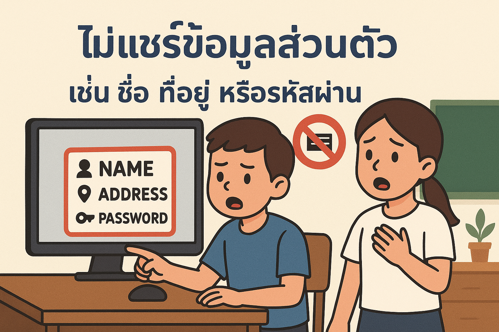
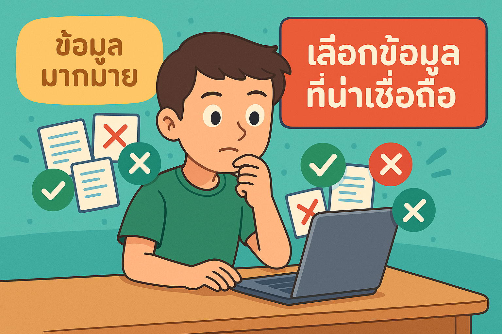
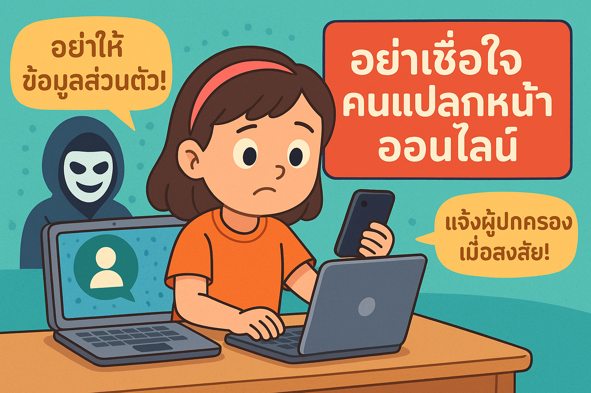
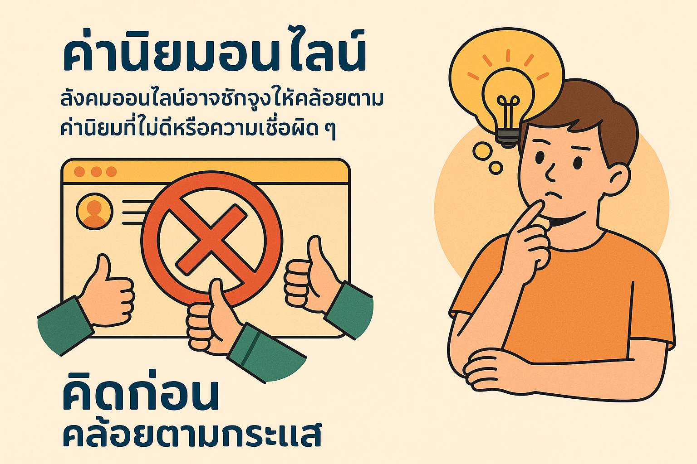
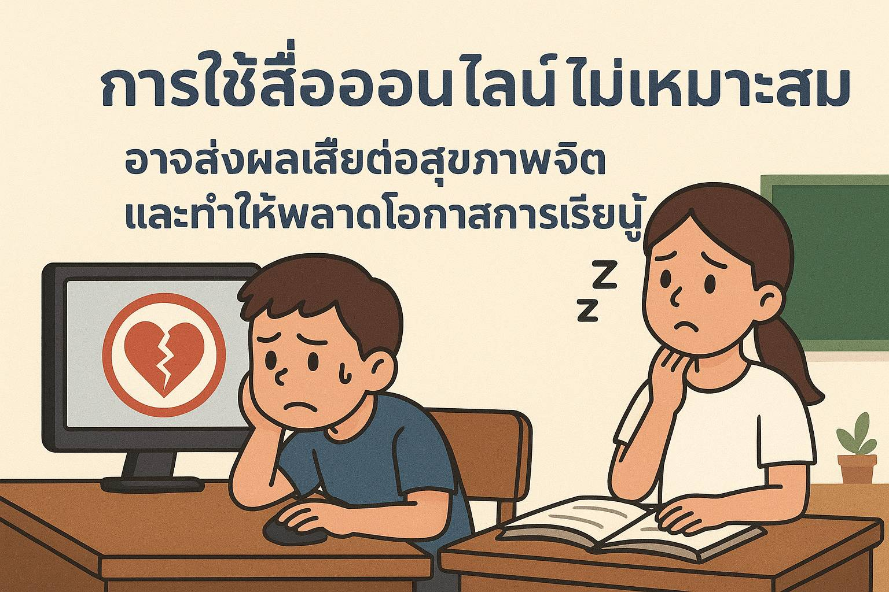
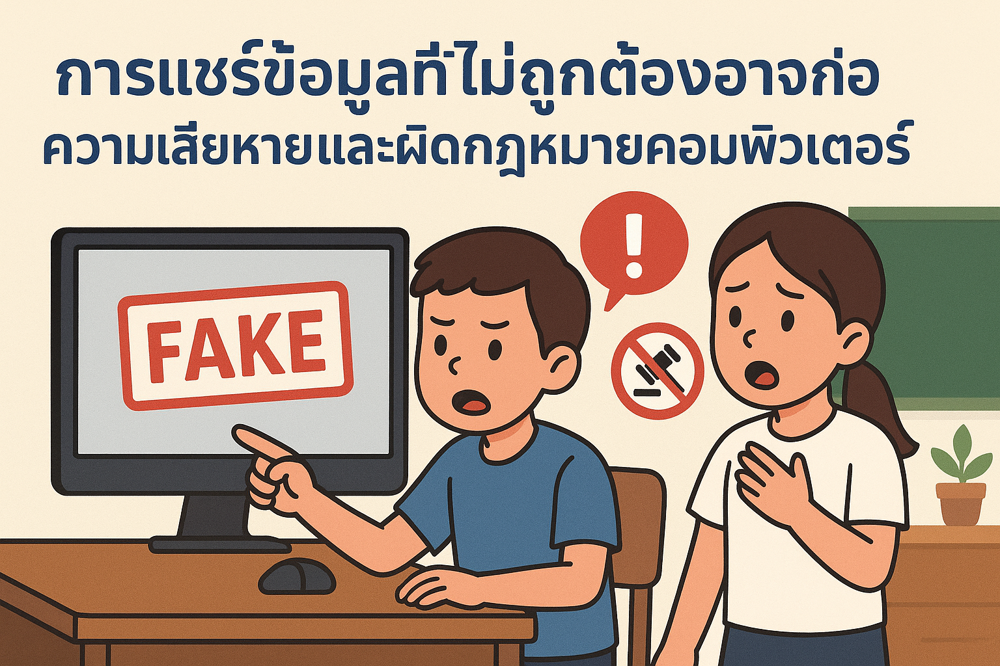

🔒 บทเรียน: เทคโนโลยีที่ปลอดภัย
1. การใช้เทคโนโลยีสารสนเทศอย่างเหมาะสมและปลอดภัย
การใช้เทคโนโลยีอย่างมีมารยาทและระมัดระวังจะช่วยให้เราอยู่ในโลกดิจิทัลได้อย่างปลอดภัย
- ✨ ไม่แชร์ข้อมูลส่วนตัว เช่น ชื่อ ที่อยู่ หรือรหัสผ่าน
 - 🚫 หลีกเลี่ยงการคลิกลิงก์ที่ไม่น่าเชื่อถือ

2. อันตรายที่แอบแฝงมากับการใช้เทคโนโลยี
ถ้าไม่ระมัดระวัง อาจเกิดอันตราย เช่น การถูกหลอก หรือเสพข้อมูลที่ไม่ดี
- 📚 เลือกข้อมูลที่น่าเชื่อถือ
- 👤 ระวังคนแปลกหน้าออนไลน์
- ⚠️ คิดก่อนแชร์ข้อมูล
- ได้รับสารสนเทศจำนวนมาก ซึ่งมีทั้งข้อมูลดีและไม่ดี ส่งตรงถึงตัวเรา
 - คนแปลกหน้าหรือผู้ไม่ประสงค์ดีอาจใช้เทคโนโลยีหลอกลวงหรือหาเหยื่อ
 - สังคมออนไลน์อาจชักจูงให้คล้อยตามค่านิยมที่ไม่ดีหรือความเชื่อผิด ๆ
 - เทคโนโลยีที่ใช้งานง่ายและราคาถูก อาจนำไปสู่การกระทำผิดกฎหมายหรือศีลธรรม

- ใช้เวลากับเกมออนไลน์มากเกินไป อาจเสียสุขภาพและโอกาสการเรียนรู้
 - การแชร์ข้อมูลที่ไม่ถูกต้องอาจก่อความเสียหายและผิดกฎหมายคอมพิวเตอร์
